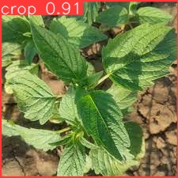

This project focuses on detecting crops and weeds in agricultural fields using AI. YOLOv10b achieved 97.11% accuracy, while CNN achieved 89.5%.
Crop and Weed Detection is a computer vision project aimed at identifying and distinguishing between crops and weeds in agricultural fields. Using state-of-the-art machine learning techniques, this project automates plant detection, helping farmers optimize crop management practices.
To run Crop and Weed Detection, you will need:
!pip install ultralytics opencv-python
The dataset used consists of labeled images of crops and weeds collected from agricultural fields. Images include varying lighting conditions, angles, and backgrounds to make the model robust. Data augmentation techniques such as rotation, flipping, and scaling were applied to increase dataset diversity.
The project compares two models:
The models were trained using labeled datasets with appropriate train-test splits. Hyperparameters such as learning rate, batch size, and epochs were tuned for optimal performance. YOLOv10b was trained for object detection, while CNN was trained for image classification. Early stopping and checkpointing ensured the best model was saved.
The project leverages deep learning models trained on labeled datasets of images containing crops and weeds. The model can recognize patterns to classify crops and weeds. It also supports real-time detection using a camera via OpenCV, allowing farmers to monitor fields instantly.
After running the detection, results are displayed on-screen. The program also generates an output image highlighting the detected crops and weeds. YOLOv10b achieved 97.11% accuracy, outperforming CNN which achieved 89.5%.
During development, challenges included varying lighting conditions, occluded plants, and similarity between certain crops and weeds. Preprocessing and data augmentation helped overcome these issues, improving model robustness.